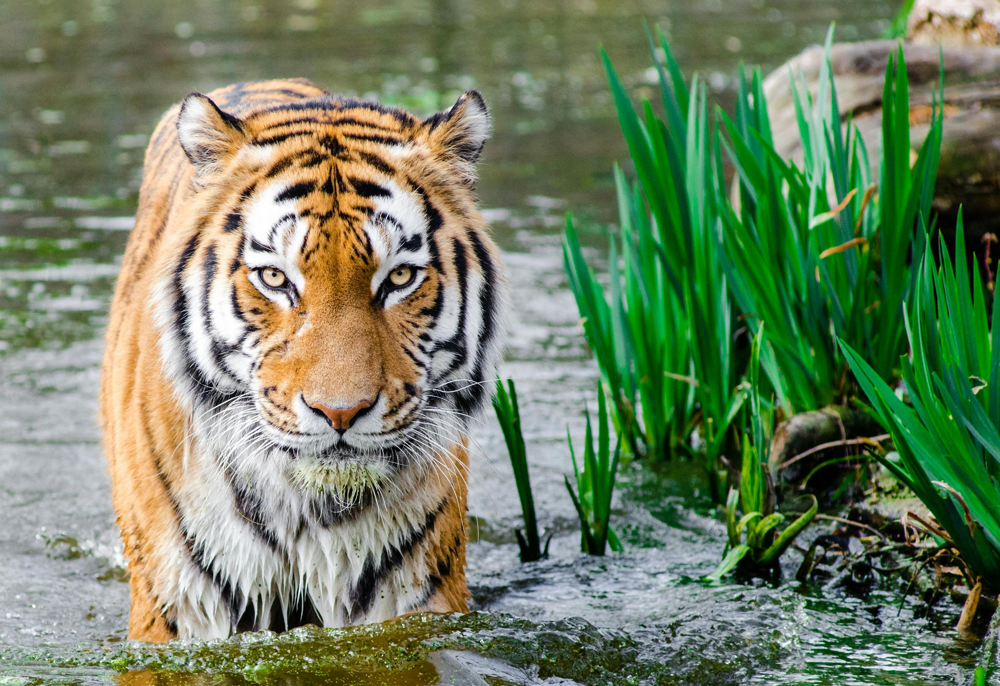

Panthera tigris
(Panthera tigris tigris) possui uma adaptação única entre os grandes felinos: uma afinidade natural com a água. Diferente de outros gatos, eles são nadadores exímios e utilizam rios e lagos tanto para caçar quanto para regular a temperatura corporal em climas tropicais intensos.
Ler mais